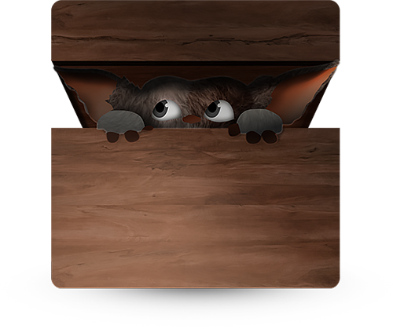

GREMLIN.JS dead simple web components
GREMLIN.JS is a dependency-free library to build web components. Web components for boringly normal websites, all your
websites. Webapps are not for everyone and everything, but modular and well organized code is.
How does it feel?
Add a custom dom element
<hello-world>
<p data-content></p>
</hello-world>
Add a spec
gremlins.create('hello-world', {
initialize: function(){
this.el.querySelector('[data-content]').textContent = 'Hello World!';
}
});
done
Installation
NPM
$ npm install --save gremlins
Bower
$ bower install gremlins
Classic
download from dist at github and include it
<script src="gremlins.js" />
Usage
Browserify, Webpack
var gremlins = require('gremlins');
Global
var gremlins = window.gremlins;